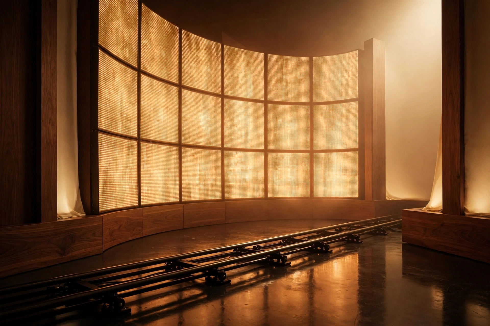

Some skills come full circle. Team roots reach back to sound design at TREBAS (1999–2001) and a technical internship at MELS, Cité du Cinéma in Montréal (2001–2002). Two decades later, the stage and the signal chain meet again — this time with a wall of light that renders the world while the camera rolls, and with artificial intelligence woven through the pipeline.
Today, virtual production sits at the centre of modern film production — LED volumes, real-time environments, Unreal Engine. The stage renders the world while the camera rolls, and the craft of a clean signal matters more than ever. A volume is not a backdrop. A volume is a living environment that responds to the camera, throws real light onto real performers and sets, and commits the background to the shot at the moment of capture.
Virtual Production now sits proudly on the team skill set, next to artificial intelligence and machine learning. Sound, image and real-time systems were never separate trades — the volume simply brings them together on one stage.
01 · Roots in sound and signal
Every craft discipline teaches the same first lesson in a different costume: the chain is only as honest as its weakest link. Sound design training at TREBAS, in audio engineering and sound design, drilled that lesson daily. A beautiful performance recorded through a noisy chain stays noisy. A careful mix built on a clipped source stays clipped. The work rewards the people who check the input before admiring the output.
The Graduate Technical Intern placement at MELS in 2001–2002 added the picture side of the same education, inside Cité du Cinéma in Montréal, where stages, crews and post-production shared one address. Film work at that scale is a logistics of signals: cameras, sound, lighting and editing all handing material to one another, with quality decided at every handover. Nobody on a professional set treats the chain as someone else's problem.
02 · The volume changes the stage
An LED volume replaces the empty green void with a rendered environment that everyone on set can see. The wall and ceiling of panels display a world built in a real-time engine, and the world shifts with the correct perspective as the camera moves, because the rendering follows the camera rather than sitting still behind the action. Reflections land on glossy surfaces, sunset light wraps around a set piece, and the shot that leaves the stage already holds its background.
Montréal holds a serious place in that story. The MELS flagship LED volume opened in February 2021 at 10,000 sq ft, with a wall 65 ft × 20 ft, running Disguise and Unreal workflows — figures reported for that stage, and a scale that puts a full environment, not a fragment, behind the camera. For a team whose internship years unfolded at MELS two decades earlier, the volume reads less like a novelty and more like the same building learning a new language.
Old craft. New stage. Same obsession with a clean signal.
03 · Real time is a discipline
Real-time rendering forgives nothing. A traditional pipeline can hide a slow render behind an overnight queue; a volume has to produce the frame while the camera rolls, at the frame rate the camera demands, with the tracking data arriving live. Latency, synchronisation and colour discipline stop being engineering footnotes and become the difference between a world that holds together on screen and a world that swims.

That discipline is familiar territory for anyone raised on live sound. A concert desk and a volume stage share a temperament: the performance happens once, in front of witnesses, and the system either keeps up or fails in public. Preparation moves earlier — environments are built, tested and lit before the shoot day — and the shoot day itself becomes execution rather than experimentation. Real time rewards the prepared and exposes the hopeful, on a stage as surely as at a mixing desk.
04 · Where intelligence enters
Artificial intelligence enters the volume pipeline at the edges first: generating and extending environment artwork, cleaning plates, assisting tracking and previs, and searching large asset libraries at production speed. Each use follows the same rule the rest of the Ovia practice follows — a model earns a place in the chain when the output can be checked, and the check stays with the craftsperson. An environment generated in an afternoon still has to survive the camera, the lighting and the director's eye.
The deeper connection is context. A real-time engine renders what the scene description, the assets and the tracking data tell the engine to render — garbage context in, garbage world out, at sixty frames per second. Since December 2022, context engineering at Ovia has meant giving intelligent systems the right material, in the right order, at the right moment. A volume stage is that same principle wearing a cinema costume: the quality of the world on the wall is the quality of the context the wall received.
05 · The honest caveats
Honesty about the volume matters. A volume excels at controlled environments, reflective surfaces and repeatable light, and a volume still loses to a real location when the story needs scale, weather or chaos that panels cannot hold. Volumes are capital-heavy stages with specialist crews, and a small production can spend its budget on the wall before a single scene is shot. The technology also moves quickly enough that today's pipeline choices age fast, which argues for craft that transfers — signal discipline, colour discipline, preparation — over fluency in any single tool.
Old craft. New stage. Same obsession with a clean signal. The sentence held for the mixing desk, held for the internship stages at MELS, and holds now for a wall of light in Montréal driven by real-time engines and intelligent tools. Trades that looked separate — sound, image, systems, models — turn out to have been one trade all along: getting a clean signal from the source to the audience, without losing the truth along the way.
References
- Ovia Inc — “From Volume to Intelligence: Virtual Production in the Age of Real-Time AI”, Ovia Inc position piece — articles index: https://oviainc.github.io/ai-services/articles/
- Ovia Inc — Author archive on Medium: https://medium.com/@ovia_